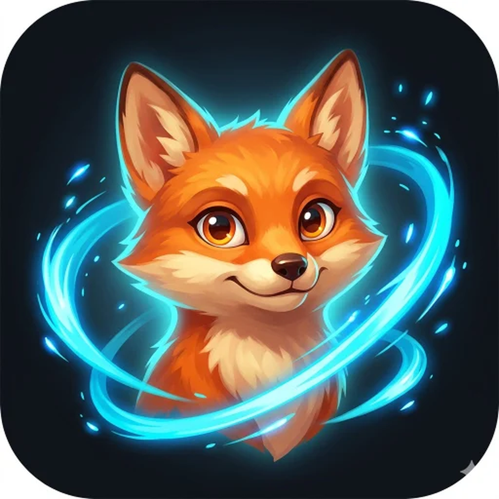

Wanderkin
The more you walk in the real world, the more your Kin collect — so a longer walk simply means a richer session whenever you sit down to play. No purchases, no timers, no pressure to play.

The more you walk in the real world, the more your Kin collect — so a longer walk simply means a richer session whenever you sit down to play. No purchases, no timers, no pressure to play.